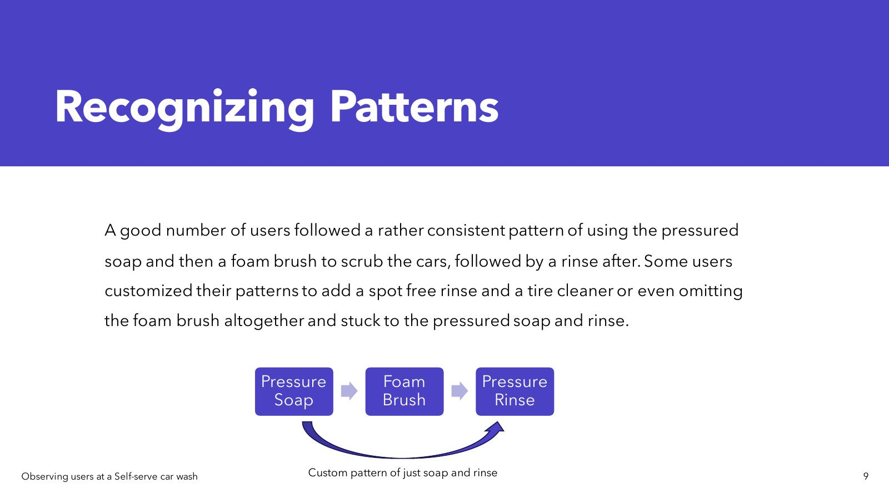
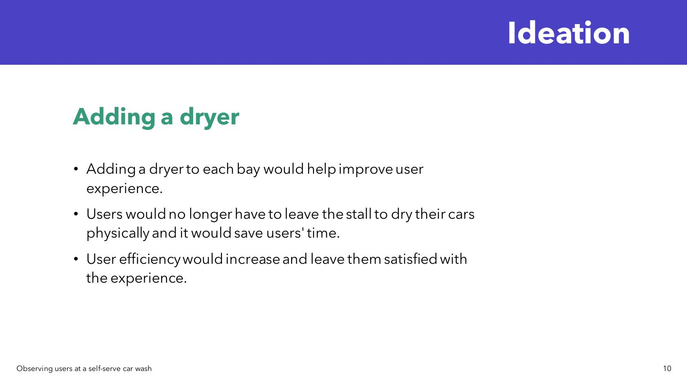
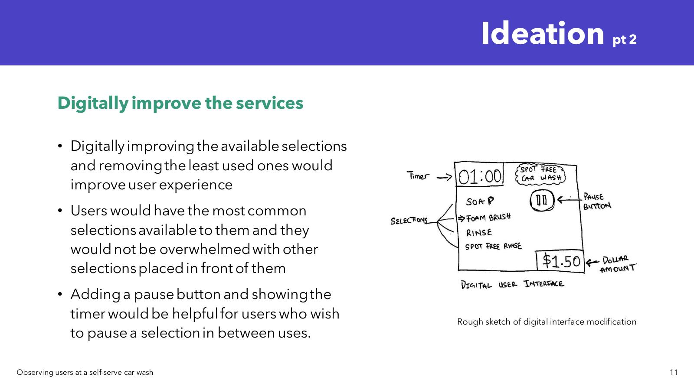

Final app screens — QR bay connection, real-time monitoring, and account overview
A trip to a self-serve car wash became a full UX investigation. Two observation sessions, 27 vehicles tracked, and a mobile app that makes the whole experience frictionless, even from your wrist.
UX design ensures customers can easily navigate and interact with a product or service, resulting in a positive and enjoyable experience. Since it's a self-service car wash, that experience needs to be seamless for every user, regardless of their familiarity with the facility.
I went to Spot Free Car Wash with a notebook and just watched. Two separate sessions; Sunday at 12:30pm and Friday at 7:30pm to capture different types of users across different contexts. What I found was a service that worked despite its interface, not because of it.
Rate how efficient users are with the time they spend washing their cars.
Find out whether users take advantage of other equipment available at the facility (vacuums, etc.).
Document different users and find trends in their behaviour and what steps they take in the washing process.
Use documented data to help create and improve self-serve car wash experiences digitally.
I observed 27 vehicles across both sessions and tracked user behaviour at every stage of the wash process. Some patterns were expected, others genuinely surprised me.


User efficiency by age: Users in their 20s–30s consistently spent less time washing than users in their 30s–40s. Most younger users paid the $4 minimum and were done as quickly as possible, prioritising speed and convenience over thoroughness. Older users often brought personal microfibre towels and took extra time for a more complete clean.
Equipment usage: The facility also had vacuums on the left side of the site. During the Sunday session, about 6 users used the vacuum station after washing, always in the same order: wash first, vacuum second. Average time at the vacuum: about 5 minutes.
The most surprising finding: I initially assumed users would take time to get familiar with the machine before starting. Most were up and running in under 5 minutes. The issue wasn't learning the machine, it was everything around it: knowing their balance, knowing if bays were working, knowing how to report a problem.
No way to communicate issues to maintenance staff. Broken equipment stayed broken for too long.
Account balance/Time left was invisible until mid-wash and users didn't know their funds until already committed.
No bay availability status. Users pulled in only to find a broken or occupied bay.
Both hands occupied during washing, no hands-free way to monitor or control the session.
I explored two initial ideation directions before settling on the digital solution:
Adding a bay dryer — a dryer in each bay would remove the need to leave the stall to dry the car, saving time and improving the overall flow. Good idea, but a hardware investment outside the project scope.
Digitally improving the interface — streamlining the available wash selections to show the most-used options, adding a pause button with timer visibility, and removing rarely-used selections that created decision fatigue. This became the foundation for the app.

I designed a mobile app that connects users to car wash facilities via QR code scanning. Scan the bay code, and you're instantly connected to that bay's controls and status. From there, users get real-time monitoring of their wash cycle, account balance visibility at all times, and a direct line to report equipment issues without leaving their bay.


The standout addition is Apple Watch integration. Once connected to a bay, users can monitor and control their wash from their wrist. No phone-juggling while managing hoses and equipment. This came directly from watching people struggle with wet, soapy hands during the observation sessions. Small detail, real impact.
Instant bay connection — no setup friction at the machine
Real-time monitoring and direct issue reporting
Apple Watch integration for hands-free control
This project confirmed something I now carry into every engagement: the best insights come from watching, not asking. If I'd surveyed car wash users instead of observing them, I'd have gotten polished answers about what people think they do and not what they actually do. The Apple Watch feature, the bay availability screen, the issue-reporting flow, all of those came from things I noticed in the field, not from a survey response.
It also taught me the value of specificity in UX. The solution isn't a generic "service app". It's designed for exactly this context, this user, this messy, hands-full, time-pressured moment.